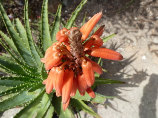
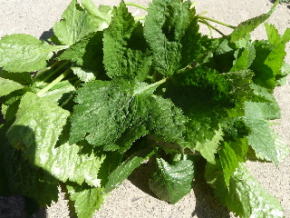
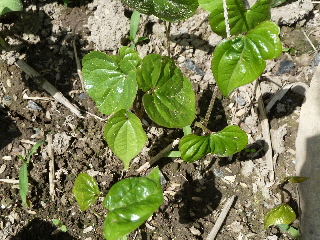
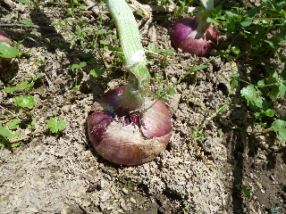

遊びで植物を育てよう
2014/05/03
アロエの花がオレンジ色になりました。
もう終わりかけかな？アロエの花です。

もっと派手に花が開くかなーと期待して見ているうちに、しぼんできました。
色は綺麗なんですけど、なんかものたりないです。
【5月TOP】
【日記TOP】
【園芸TOP】
2014/05/03
三つ葉を収穫しました。
木の下で勝手に育ってくれる三つ葉です。

忘れたころに出来ているので、気づいたら葉が大きくなっていました。
ちょっと格好が悪いです。
小まめに見ないといけませんね。
ちゃんと育てていないので沢山収穫はできませんが、それくらいが丁度いい気がします。
【5月TOP】
【日記TOP】
【園芸TOP】
2014/05/31
ムカゴがいっぱい生えてきました。
落ちたムカゴから芽が出だしました。

沢山育てて収獲したいとは思いますが、これ育てようと思ったら日陰がいっぱい出来るんですよね。
隅っこでほどほど作るくらいが丁度いいかもしれません。
【5月TOP】
【日記TOP】
【園芸TOP】
2014/05/31
紫タマネギを収穫しました。
玉葱が大きくなりました。

沢山出来たので、沢山食べないとです。
紫玉葱はサラダですよね。
辛味をしっかり抜いて、美味しくいただきたいです。
【5月TOP】
【日記TOP】
【園芸TOP】
過去の日記
【2024年5月の日記】
【2023年5月の日記】
【2022年5月の日記】
【2021年5月の日記】
【2020年5月の日記】
【2019年5月の日記】
【2018年5月の日記】
【2017年5月の日記】
【2016年5月の日記】
【2015年5月の日記】
【2014年5月の日記】
【2013年5月の日記】
【5月TOP】
【日記TOP】
【園芸TOP】
畑仕事じゃないよ。
【おいしいものを食べよう。】【たくさん寝よう。】
【ソロ活をしよう!】【季節感のあることをしよう。】【動画視聴はほどほどに。】【当サイトの全てのコンテンツは無断転載禁止です。】